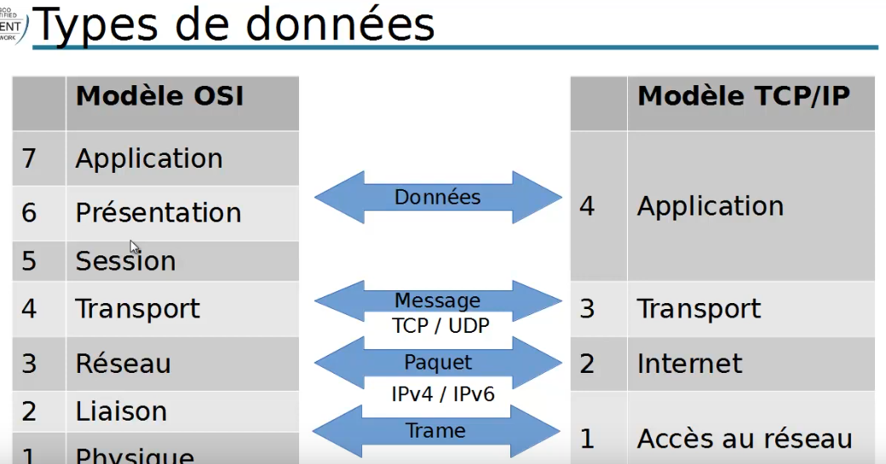

Modèle TCP/IP
Plan
• Présentation
• Comparaison acec le modèle OSI
• Types de données
• Ce qu'on a couvert
Présentation
• suite de protocoles : TCP + IP
◇ adopté le 1 er janvier 1983 ar Arpanet
▪ fusionne avec le réseau de la Nationam Science Foundation en 1984 donnant naissance à internet
- le web, lui, n'étany apparu qu'en 1990
• norme officielle d'internet depuis 1989 (RFC 1122)
Comparaison avec le modèles OSI
• Plus pragmatique
◇ seulement 4 couches
▪ les protocoles internet ne se soucient pas de la liaison ni de la connexion physique
▪ ni de la séparation de protocoles applicatifs
- certains pouvant couvrir plusieurs couches
• Applications + TCP/UDP + IP + Réseaux
• Adopté sur la grande majorité des LAN, MAN et WAN aujourd'hui
◇ du fait du rôle central d'Internet
Types de données

Ce qu'on a couvert
• Présentation du modèle TCP/IP